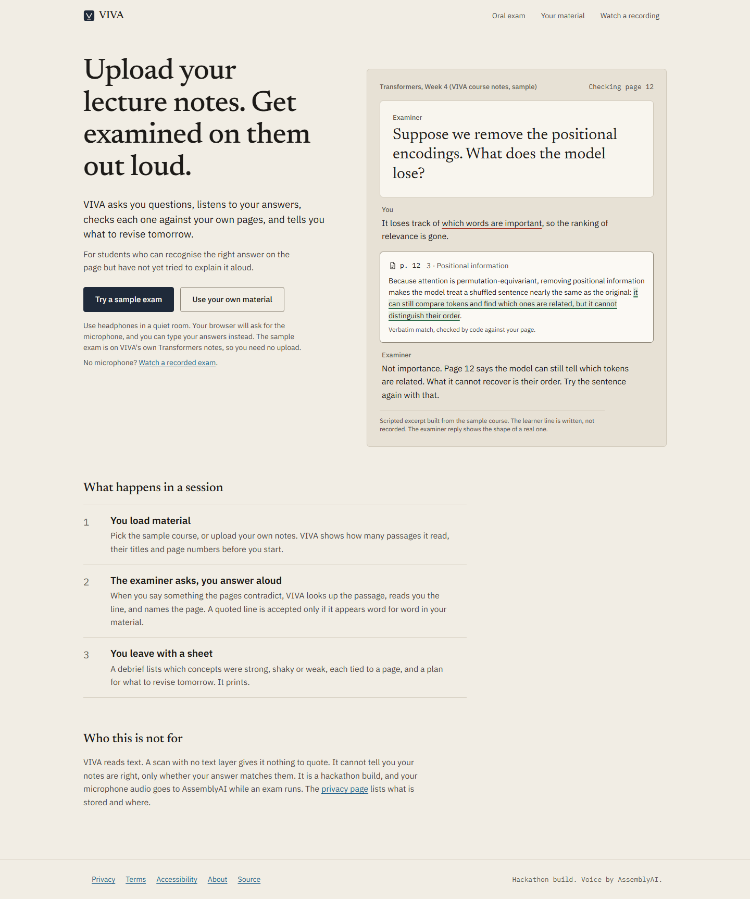

Give it your lecture notes. Close them. Get examined out loud.
It checks each answer against your own pages, reads you the line you got wrong, and names the page.
Who it helps
A student revising from their own text notes before an oral exam, a viva or a seminar, who has read the pages several times and never tried to explain them aloud.
Rereading and highlighting test recognition. An oral exam asks you to produce the explanation with the page closed.
Alone, nobody asks the follow-up. Nobody tells you which page you got wrong, so a confident wrong answer stays wrong until the real exam.
Tools that answer from a model's memory can agree with you when your notes disagree. VIVA only ever quotes your notes, and code checks the quote is really there.

One question at a time, spoken, in the examiner's voice.
You talk. The service decides when your turn ends.
The examiner calls verify_claim on your exact words.
Only a contradicted verdict allows a correction, with the line and the page.
You say the fact in your own words. You can interrupt at any point.
Learner, synthetic voice
I think it runs a single head over the input.
Examiner, live AssemblyAI session
The material says, Multi-head attention runs the query-key-value computation h times in parallel, each in a smaller subspace, on page fifteen. Please restate that in your own words.
The model proposes a verdict and a quote. Code checks every piece of the quote is an exact substring of the passage it named, in order. If not, the verdict becomes "not in the material".
Real line from page 15, named passage matches. The examiner may quote it and say the page.
One word of the quote changed, or the quote is from a different passage. Downgraded. The examiner says the material does not settle it.
The quote is the learner's own words repeated back. Downgraded.
An invented citation, an altered quote, or a page number that does not hold the line. Tested with a mutation that changes one word of a real quote (tests/oral-verify-claim-set.test.ts).
A wrong verdict with a real quote. The judge model can be wrong; the substring check cannot see that. On a labelled set of 54 claims the judge made 0 false confirmations, and abstained on 3 claims the labels settled. It is a small set written in this repository.
Live run, 2026-09-29, judge model openai/gpt-oss-120b.
| Measure | Value | n | Date |
|---|---|---|---|
| Session ready | 444 ms | 3 | 2026-09-29 |
| First examiner audio | 958 ms | 3 | 2026-09-29 |
| Tool round trip, call to result | 2470 ms | 3 | 2026-09-29 |
| Interruption detection: first word to service reports speech | 1286 ms | 3 | 2026-09-29 |
| Claim check: labelled claims, false confirmations | 54, 0 | 54 | 2026-09-29 |
| Claim check: contradicted recall | 0.889 | 54 | 2026-09-29 |
| Judge time, median and p95 | 590 and 2067 ms | 53 | 2026-09-29 |
| Front page JS, gzip, throttled mobile profile | 139.5 KB | 5 | 2026-09-29 |
| /oral JS, gzip, same profile | 178.4 KB | 5 | 2026-09-29 |
Live rows: real AssemblyAI service, synthetic learner voice (Windows speech synthesis), Node client running the browser's socket code, local server. Not a human on a microphone.
Also true today
Not done yet
Your microphone audio goes to AssemblyAI while an exam runs. The privacy page lists what is stored and where.